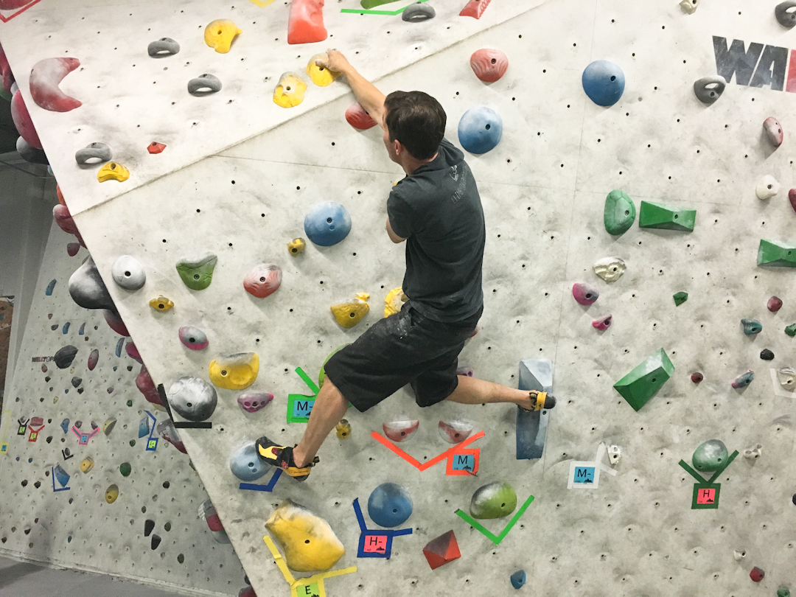
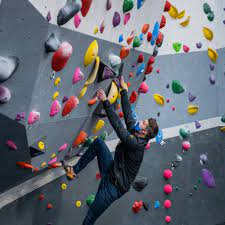
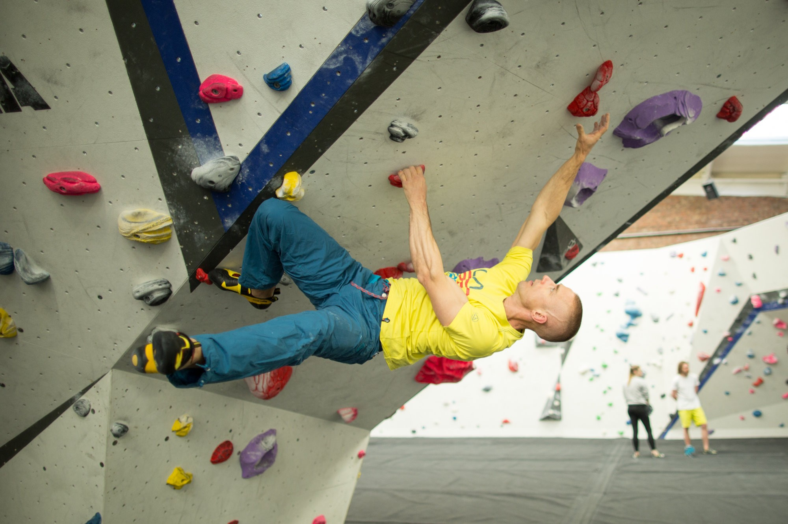

☰ Menu
It's all in the wrist
That was a lie...
There are a lot of techniques to use in climbing
A lot of strength in climbing comes from the forearms, as well as the legs, but, as with many sports, technique
trumps all. There are many many different moves to use in climbing, from a drop knee to straight arms to
stemming and even more. Here, we're going to be talking about the drop knee, straight arms, and hip in
techniques.

Drop knee
One of the most underutilized techniques, the drop knee is my personal favorite. It technically falls under
the umbrella technique of going hip in, but this is a more specific movement that deserves a spotlight. It
entails turning to the right or left (depending on which knee will drop), then rotating that knee downward
while keeping pressure on the opposite foot. This creates a compression force between the two feet, engendering
a stable base off of which the climber can push to reach the next hold.

Straight arms
Even more self-explanatory than the drop knee technique, keeping straight arms is one of those beginner mistakes
that is generally easy to remedy. As the name implies, the technique entails just one thing; avoiding bending
the arms. Keeping the arms straight uses less energy than constantly using muscle power to pull yourself halfway
up, and energy conservation in climbing is one of the keys to becoming great. If nothing else, climbing with bent
arms makes for a situation that some climbers call "t-rexxing," for obivous reasons.

Hip in
Going hip in is a technique used to get a more desirable position on the wall, and can be performed in a variety
of ways. From the aforementioned drop knee to inside flagging, and literally just turning to the side, hip in
is used on inclined walls to take pressure off the hands and put it on the feet. Going hip in does this as well
bringing the climber physically closer to the wall, allowing them to reach further up the wall. This, of course,
helps the climber reach that one last tricky hold.